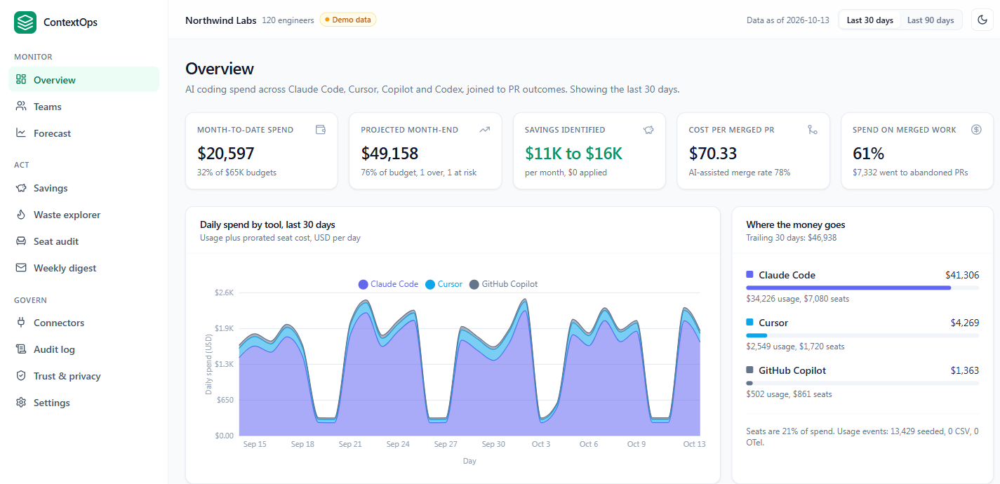

ContextOps · The problem
86%
of engineering leaders can't say which AI tools pay off
2028
AI coding costs pass the average developer salary
98%
of FinOps teams now manage AI spend, up from 31%
Why it matters: engineering managers now own a budget that grows every month, with no way to tie it to what actually shipped.
Sources: DX survey of 275 leaders · Gartner, Jun 2026 · FinOps Foundation, State of FinOps 2026
ContextOps · This semester
01 Researched
2,200+ engineer posts and 35 startup ideas scored. This one won every round.
02 Built
A working MVP that ties Claude Code, Cursor and Copilot spend to merged code, and fixes waste in one click.
03 Next
20 customer interviews and 5 design partners.
